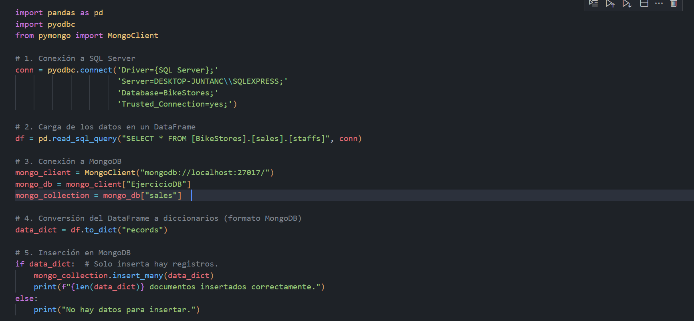
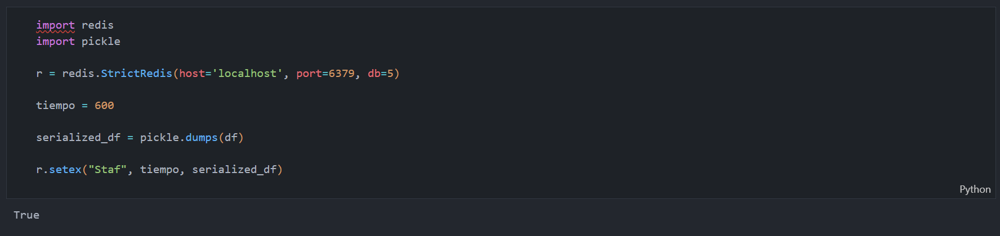

📊 Manejo de SQL Server, MongoDB y Redis
Este proyecto muestra el proceso de integración y transferencia de información entre distintos gestores de bases de datos. Se parte de SQL Server como fuente de datos, y posteriormente la información es enviada a MongoDB y Redis para diferentes usos y optimización de consultas.
1. Conexión y extracción de datos
Se establece la conexión con SQL Server y se construye un DataFrame con los datos requeridos.

2. Transferencia a MongoDB
Una vez obtenidos los datos, se realiza la migración hacia MongoDB, donde se almacenan para su posterior análisis.
3. Replicación en Redis
Finalmente, los datos se envían a Redis, lo que permite un acceso rápido a la información en memoria.
Herramientas utilizadas: Visual Studio Code, SQL Server, MongoDB, Redis.
⬅️ Volver